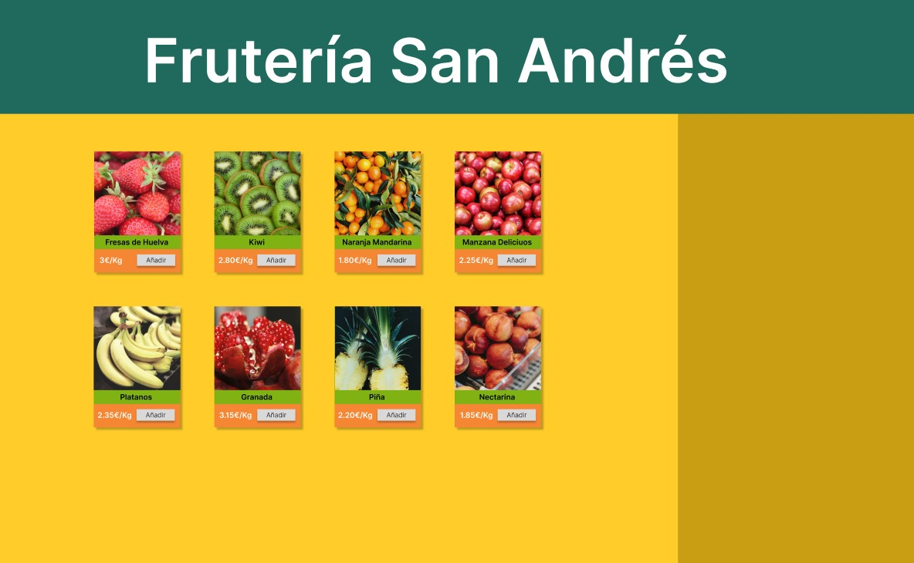
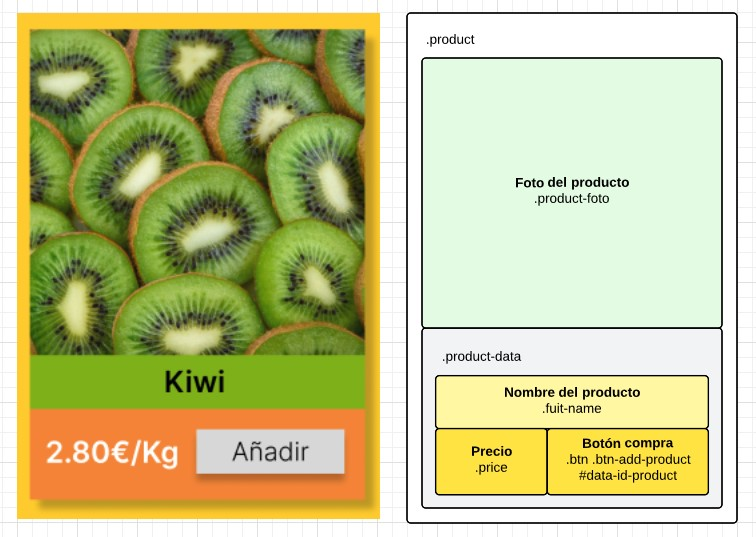
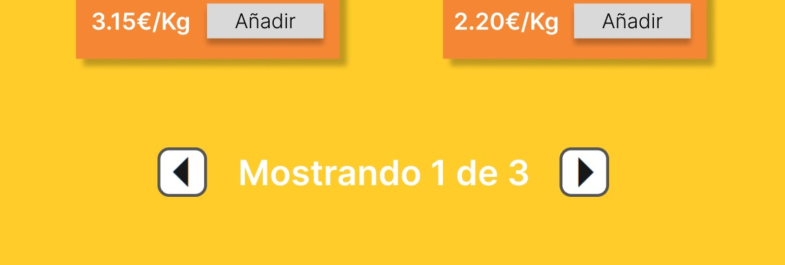

PR0414 Frutería App (I)
En esta práctica vamos a diseñar una pequeña tienda online, por ejemplo, una frutería online. En este caso, vamos a suponer que la página recibe un fichero JSON con los datos de los productos a mostrar de una API REST y, a partir de estos datos, vamos a contruir la página. Como aún no hemos visto como recoger datos de una API, debes incluir el fichero JSON directamente en el código. Tienes el enlace al código en el apartado de recursos, únicamente tienes que copiar el contenido y pegarlo en tu fichero js.
En esta primera práctica deberás mostrar los productos contenidos en el fichero JSON de forma similar a la siguiente imagen:
Algunas cuestiones que tienes que tener en cuenta:
Recursos:
Aquí tienes un listado de recursos que necesitas para la práctica. Solo se facilita el CSS y el HTML del armazón, el resto deberás diseñarlo y crearlo tú mismo.
Diagrama
En estas páginas que ya comienzan a tener una cierta complejidad es importante que tengas muy claro cuál será la estructura (clases, identificadores, …) que va a tener la página antes de empezar con la parte de JavaScript. Lo primero de todo, haz un esquema en papel o en alguna de las múltiples herramientas existentes (Lucidchart, Visio, Dia, …) donde veas que estructura va a tener el HTML, así como el nombre de clases e identificadores que utilizarás.
Cuanto mejor planifiques tu página web más fácil te será programarla y menos problemas encontrarás.
En la siguiente imagen tienes un ejemplo de algunos diagramas que yo crearía para esta página. La imagen de la izquierda con lo que espero que sería el resultado final está realizada con Figma mientras que el esquema con las clases e identificadores de cada elemento lo he realizado con Lucidchart.
Código ordenado
Ya empezamos a trabajar con páginas más elaboradas en las que aumenta el número de líneas de código, por lo que es cada vez más importante ser muy ordenado en el código.
Algunos consejos a tener en cuenta a este respecto son:
OPCIONAL
¿Has acabado pronto? Intenta implementar un sistema para mostrar los productos por páginas de forma que en cada página únicamente se muestren, por ejemplo, 8 productos y mostrar en la parte inferior un sistema de navegación entre páginas.
